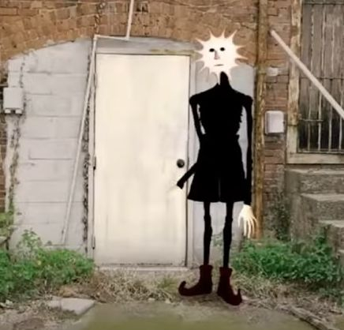
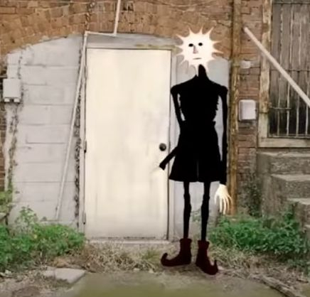

As I mentioned earlier, I am active (sort of) in several fandoms. This inevitably means I have a few favourite charaters here and there. I'm gonna show you one character that has a special place in my heart !!!!!!!!!
 



So Jeppy Sunman is a really skinny guy with a sun-like shape for a head with very human facial features. We don't really know his origins cuz he only has one video on the Doctor Nowhere Channel (Doctor Nowhere is the creator of this fictional creature). In the video, Jeppy is shown to have a very ordinary life: Wake up, wash up, go to work, stay at work until the sun goes down, go home, sleep, repeat. It is implied that this is just his life every day and he is miserable. Jeppy couldn't find anything more to living than his motononous routine that keeps him trapped in his own "hell". To cope with this, he plays with little figurines and dolls in a play-landscape, a copy of his own (possibly). Jeppy lets his dolls live the fulfilling and exciting love he doesn't have, the life he wants to have but cannot. He also does this to feel a sense of control over a form of life. Jeppy can control his dolls' lives, but not his own. We see clips of these characters with their own little buildings in the beginning of the video. This life of his is slowly driving him to insanity or pure depression at best. "Sometimes Jeppy wonders how much more of this he can take," reads a quote from Jeppy's video. Then he realises that this fictional world of his is holding him back. "Escape will pull him in further in, so he must tear away from it." The narrator tells Jeppy that, "although life can seem gray, that life and all its meaning never went away." We know that the narrator is talking to Jeppy because of the next line, "That flower you saw on your way to work today, the one that had your face in a funny little way." As the days go by, Jeppy learns to look at the little things and enjoy life as it is; a beautiful scope of passion and colour, not a monotonous cycle. "That little laugh you gave, the smile that resounded. That's where life is." The last few clips are of the same buildings from the beginning but this time, the little characters aren't there. Afterwards, we see those very characters stacked upon shelves, one by one, sitting quietly without a sound. This symbolizes Jeppy moving on from his fictional world and leaving it behind for his real world.
The reason as to why I love Jeppy so much is because of how relatable and heart-touching his story is. It's a simple one, yes, but it serves as a sef reflection for so many people. I physically clutch my chest in awe when I watch his video, it is so beautifully put together, I just can't resist it. Also, his character design is very interesting and awesome. I've always liked mysterious creatures with non-human heads. The fact that Jeppy comes from an extremely talented analog horror artist makes it even better. Jeppy has a similar design to Sundrop in Five Nights At Freddy's Security Breach (a character that would've made it onto this list 3 years ago) and I've taken a liking to stars in terms of design recently. A sun is obviously a star, it may not be shaped like the average 5-sided star we know, but astrologically, it is a star. Another thing about me is that I like skinny guys and I mean that with all my heart. He could literally be skin and bones and I'd take him. If you even take a glance at Jeppy's design, it would be obvious as to why I like him. So with all these aspects combined, it is quite obvious as to why I love Jeppy Sunman. Thanks for reading lol.
This is the link to Jeppy's video for reference, I hope you like it just as much as I do !!!!!!!